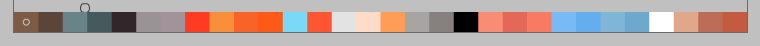
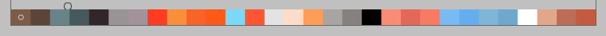

0.Wacom driver settings
0.Wacom driver settings1.How to select tools
2.Pen options
3.Menu buttons
4.Color history
5.Replay mode
6.Reset app
7.How to use Lasso tool
8.How to change canvas size <- back
The description was listed in the most important order when using the program.
Uncheck “Use Windows ink" function on Wacom driver's mapping tap.
If you using non-wacom tablet. I'm not sure it is working correctly.
 Default settings for this app.
This is a method designed to operate quickly with one hand without using a shortcut key.
Default settings for this app.
This is a method designed to operate quickly with one hand without using a shortcut key.
If you don't want to use the right-click of the mouse, Read the second case.
First, set the tablet pen button settings as shown above image.
 The tool box appears when you press the right mouse button and disappears when you release the right button.
The tool box appears when you press the right mouse button and disappears when you release the right button.
The tool box is divided into dark and bright buttons. Click the dark button and drag. It will zoom with the tool or rotate the canvas.
If you use the zoom tool, the canvas zooms in and out around the clicked position. so move the mouse cursor at the position you want to zoom. Tool-box follows the mouse cursor.
If you want to turn off the toolbox without selecting any tools, place the cursor on dark buttons and release the right mouse button. To select a bright button, move the cursor to the icon you want to select and release the right mouse button.
Click and drag any bright button to move the canvas.
You can adjust the size of the tool box by click+drag the dot icon.
The pen tool and eraser icon will turn on instead. The small line icon above the pen icon is line tool icon. When the eraser tool is selected, the straight line tool changes the "Eraser straight line tool". When using Lasso, a similar menu appears, but the usage is slightly different. click here to see how to use lasso tool. The video below shows how to use the tool box. Watch the mouse button operation carefully. If you do not want to use the right mouse button, click the Tool-box ON / OFF button on the top, and the tool box will appear.
If you do not want to use the right mouse button, click the Tool-box ON / OFF button on the top, and the tool box will appear.
If this is ON, you cannot use the right mouse button.
Basically you can select a tool with a left mouse click.
However, the operation of "Move tool" and "Rotate canvas" is Click+Drag.
To use zoom tool, click on the icon and click desired point on the canvas and move the mouse.
Click+Drag a small protrusion on the tool box to move the tool box.
See video below how to use tool box without using right mouse button.
Shortcut key layout. Green is for right-handed and blue is for left-handed.
Basically it is ON when a key is pressed and OFF when it is released.
A, Z, X, F (K, M, ,, G)keys works even if you press it normally
The pen size adjustment keys (Q, I) can quickly change the size and transparency of the pen, line, and eraser tools. Holding down the Q (I) key and click+drag and Dragging left and right changes the pen size, and dragging up and down changes the transparency.
If you hold down the Q+D (I+H) key and drag as described above, the eraser size and transparency will change.
Shift+D (Shift+H) key is erase-straight line tool.
Shift+D+Q (Shift+H+Q) Changes the size and transparency of erase-straight line in the same way as above.
 This box changes the shape, size, transparency, and color of the pen (eraser, straight line tool).
This box changes the shape, size, transparency, and color of the pen (eraser, straight line tool).
Click + Drag the empty part of the box to move the box, and the dot icon at the bottom right changes the size of the box. The part written as “14px” means the size. Click on the right side of this box to increase the size and the left side to decrease the size.
The part written as “100%” means transparency. The adjustment method is the same as described above.
These two boxes can change numerical values quickly by clicking + Drag (left / right or up / down).
Eraser and pen size and transparency data are separated.
The blue circle is a pen (straight line, eraser) shape change icon. Each time you click, it changes to a circle or a rectangle.
Click on the icon below blue shape icon to bring up the color picker window. There are two boxes on the top, that display the selected color and current color.
You can change the pen opacity by clicking the left and right of the “Selected Color Box” on the left.
Click the "current color box" on the right to initialize the color change. To close the Color Picker window, click outside the window or press the right mouse button.
The video below shows how to use the pen option.
The white square buttons of this app.
If you want to save as new file, please click this button for a long time.
Two files are saved: "*.png" file and "*.2020" file. *.2020 file contains original image data with transparent background and replay-data. So usually it is recommended to work with * .2020 files.
This is a rare case the file is in use by another app, you cannot save it, so app trying save as new name with “FileName_new.png”. Shortcut key is Ctrl+S, and Save As is Shift+Ctrl+S.
To cancel the capture mode, just click canvas without dragging.
The Shortcut Key is Shift+S, see the video how to use.
The maximum image size is 2000x2000 pixel. If the image to be exceeds this size, it will be forcibly resized.
Shortcut key is Ctrl+O.
You can also press shortcut key ESC 3 times.
This set the eraser tool color the same as the background color.
You can also Click+Drag this button to make it the background color by the color inside the canvas or color-history bar.
The video below shows how to use the background color button.
Bottom side of window, "Used memory" increases as you draw more complex images as the canvas size increases.
"Cached image" is the total size of images created to improve performance when frame search on replay mode. The more you draw, the larger the size.
If new version released, about window will appear.
Press this button twice to record from the beginning in the image of a specific frame.
You can undo up to 7 times in Draw Mode.
However, if you want to restore previous image, select the frame and press this button twice.
This button does not usually appear in frames that can be normal undo.
There is a gray dividing line in the frame search bar. This button appears only for frames smaller than that line.
Shortcut key is Shift+S.
 These are the colors bottom of app window.
Record up to 30 used colors. The color selected with Eye-dropper is not recorded.
To add a color manually, place the cursor on the color history bar and click the right mouse button or hold down the Ctrl key and click.
The leftmost color is always same with background color.
Clicking on a color automatically changes to the Pen tool unless the Line-tool is enabled.
Click+Drag the background color button to use these colors as the background color. Click here to dee details.
You can see see the whole process of image you drawn.
Replay mode menu button description is here.
Using the frame search bar, You can play it wherever you want like a normal video. However, when using features such as Super-undo, it is difficult to select the frame or image you want with this search bar.
At that time, use the two "Next" and "Prev" buttons on the left of the search bar. You can search the frame by stroke unit.
Shortcut keys are the left and right arrow keys. If you hold down the Shift key and use the buttons, you can search by frame. When searching for the previous frame, the image will be redrawn from the beginning, which will slow down the search performance.
The replay mode also has a tool box. Using right mouse button orTool-box ON/OFF button
There are 4 buttons, Canvas zoom, Canvas rotate, Change playback speed, Follow replay-cursor. Click+Drag is the basic operation for buttons but only "follow replay-cursor button" does not need drag.
To move canvas, Click+Drag on canvas.
The numerical value in parentheses indicates the total playback time. For example, x43 [12.6 min] means that the total playback time is 12.6 minutes when playing at 43 times speed.
The higher the playback speed, the higher the CPU load. When the "Follow replay-cursor" button is turned ON, when the cursor moves outside the app window, it automatically moves the canvas to show the current drawing position.
Shortcut key, Enter to play / stop.
up / down arrow keys to adjust the playback speed.
Basically, every time this app starts, it restores the state when it was last closed.
When an application makes an error or wants to return to a fully initialized state
holding down the Shift key and close the app. it will be initialized.
also replay data and drawn image etc data will be deleted. If you turn off or restart your computer before closing this app, auto-save is not working.
So recommend close this app first and turn off your computer.
Select the Lasso tool button and draw the area you want to adjust on the canvas.
If drawing area finished, Lasso tool box will appear.
Click+Drag is basic operation. but mirror buttons does not need drag.
You can also open tool box with a right mouse click.
shortcut keys Enter and ESC is OK and cancel.
See the video below how to use lasso tool.
Right mouse click on the gray bar of the canvas border.
then left mouse click+Drag.
Any image data that goes out of the canvas will be erased.
The maximum size is 2000x2000 pixels.
You can also adjust the size by Click + Drag with holding down the Ctrl key
See the video below how to change canvas size.
Wacom driver settings
Uncheck “Use Windows ink" function on Wacom driver's mapping tap.
If you using non-wacom tablet. I'm not sure it is working correctly.
How to select tools
1.Select using the right mouse button
Default settings for this app.
This is a method designed to operate quickly with one hand without using a shortcut key.If you don't want to use the right-click of the mouse, Read the second case.
First, set the tablet pen button settings as shown above image.
The tool box appears when you press the right mouse button and disappears when you release the right button.The tool box is divided into dark and bright buttons. Click the dark button and drag. It will zoom with the tool or rotate the canvas.
If you use the zoom tool, the canvas zooms in and out around the clicked position. so move the mouse cursor at the position you want to zoom. Tool-box follows the mouse cursor.
If you want to turn off the toolbox without selecting any tools, place the cursor on dark buttons and release the right mouse button. To select a bright button, move the cursor to the icon you want to select and release the right mouse button.
Click and drag any bright button to move the canvas.
You can adjust the size of the tool box by click+drag the dot icon.
The pen tool and eraser icon will turn on instead. The small line icon above the pen icon is line tool icon. When the eraser tool is selected, the straight line tool changes the "Eraser straight line tool". When using Lasso, a similar menu appears, but the usage is slightly different. click here to see how to use lasso tool. The video below shows how to use the tool box. Watch the mouse button operation carefully.
2.How to select tools without using the right mouse button
If you do not want to use the right mouse button, click the Tool-box ON / OFF button on the top, and the tool box will appear.If this is ON, you cannot use the right mouse button.
Basically you can select a tool with a left mouse click.
However, the operation of "Move tool" and "Rotate canvas" is Click+Drag.
To use zoom tool, click on the icon and click desired point on the canvas and move the mouse.
Click+Drag a small protrusion on the tool box to move the tool box.
See video below how to use tool box without using right mouse button.
3.Tool selection using shortcut keys
| Function | Shortcut key | Function | Shortcut key |
|---|---|---|---|
| Erase tool | D, H | Zoom canvas | W, U |
| Line tool | Shift | Move canvas | Space |
| Line-erase tool | Shift+D, Shift+H | Flip canvas | A, K |
| Lasso tool | R, T | Rotate canvas | S, J |
| Eye-dropper tool | C, N | Move canvas image | E, Y |
| Color picker | F, G | Undo | Z, , |
| Adjust pen opacity / size | Q, I | Redo | X, M |
| Adjust erase opacity / size | Q+D, I+H | Replay mode | 2, 7 |
| Draw mode | 1, 6 | Playback start / stop | Enter |
| Save file | Ctrl+S | Adjust playback speed | ↑, ↓ |
| Save as | Ctrl+Shift+S | Search frames by stroke | ←, → |
| load file | Ctrl+O | Search frames by 1 frame | Shift+←, → |
| Save current image of replay mode | Shift+S |
Basically it is ON when a key is pressed and OFF when it is released.
A, Z, X, F (K, M, ,, G)keys works even if you press it normally
The pen size adjustment keys (Q, I) can quickly change the size and transparency of the pen, line, and eraser tools. Holding down the Q (I) key and click+drag and Dragging left and right changes the pen size, and dragging up and down changes the transparency.
If you hold down the Q+D (I+H) key and drag as described above, the eraser size and transparency will change.
Shift+D (Shift+H) key is erase-straight line tool.
Shift+D+Q (Shift+H+Q) Changes the size and transparency of erase-straight line in the same way as above.
Pen options
This box changes the shape, size, transparency, and color of the pen (eraser, straight line tool).Click + Drag the empty part of the box to move the box, and the dot icon at the bottom right changes the size of the box. The part written as “14px” means the size. Click on the right side of this box to increase the size and the left side to decrease the size.
The part written as “100%” means transparency. The adjustment method is the same as described above.
These two boxes can change numerical values quickly by clicking + Drag (left / right or up / down).
Eraser and pen size and transparency data are separated.
The blue circle is a pen (straight line, eraser) shape change icon. Each time you click, it changes to a circle or a rectangle.
Click on the icon below blue shape icon to bring up the color picker window. There are two boxes on the top, that display the selected color and current color.
You can change the pen opacity by clicking the left and right of the “Selected Color Box” on the left.
Click the "current color box" on the right to initialize the color change. To close the Color Picker window, click outside the window or press the right mouse button.
The video below shows how to use the pen option.
Menu buttons
The white square buttons of this app.
Save button
This button saves an image. Check the file path and name only at the beginning. After that, it automatically writes to the same file.If you want to save as new file, please click this button for a long time.
Two files are saved: "*.png" file and "*.2020" file. *.2020 file contains original image data with transparent background and replay-data. So usually it is recommended to work with * .2020 files.
This is a rare case the file is in use by another app, you cannot save it, so app trying save as new name with “FileName_new.png”. Shortcut key is Ctrl+S, and Save As is Shift+Ctrl+S.
Capture image button
Use this if you want to save only *.png file, or save the image being drawn in replay mode. Click this button and draw the area you want to capture with Click+Drag. It will be saved as 'FileName_|RandomString|.png'.To cancel the capture mode, just click canvas without dragging.
The Shortcut Key is Shift+S, see the video how to use.
Load button
You can load *.png, *.gif, *.jpg and *.2020 files. You can also load file by dragging & dropping into the application window.The maximum image size is 2000x2000 pixel. If the image to be exceeds this size, it will be forcibly resized.
Shortcut key is Ctrl+O.
Delete all data button
Press this button 3 times to delete the replay-data and drawn image.You can also press shortcut key ESC 3 times.
Background color button
Change the background color of the canvas itself.This set the eraser tool color the same as the background color.
You can also Click+Drag this button to make it the background color by the color inside the canvas or color-history bar.
The video below shows how to use the background color button.
Tool-box ON/OFF button
Click here to see details.About button
You can see running time of this app, and my Twitter and E-Mail, and language-specific instructions are linked.Bottom side of window, "Used memory" increases as you draw more complex images as the canvas size increases.
"Cached image" is the total size of images created to improve performance when frame search on replay mode. The more you draw, the larger the size.
If new version released, about window will appear.
Replay mode button
Changes replay mode.Click here to see details.Re-recording button
This button is located at the bottom of the window in replay-mode.Press this button twice to record from the beginning in the image of a specific frame.
Super-undo button
his button is located at the bottom of the window in replay-mode.You can undo up to 7 times in Draw Mode.
However, if you want to restore previous image, select the frame and press this button twice.
This button does not usually appear in frames that can be normal undo.
There is a gray dividing line in the frame search bar. This button appears only for frames smaller than that line.
Image capture button
Click this button to save an image of a specific frame.Shortcut key is Shift+S.
Draw mode button
Return to drawing mode.Color history
 These are the colors bottom of app window.
Record up to 30 used colors. The color selected with Eye-dropper is not recorded.
To add a color manually, place the cursor on the color history bar and click the right mouse button or hold down the Ctrl key and click.
The leftmost color is always same with background color.
Clicking on a color automatically changes to the Pen tool unless the Line-tool is enabled.
Click+Drag the background color button to use these colors as the background color. Click here to dee details.
Replay mode
You can see see the whole process of image you drawn.
Replay mode menu button description is here.
Using the frame search bar, You can play it wherever you want like a normal video. However, when using features such as Super-undo, it is difficult to select the frame or image you want with this search bar.
At that time, use the two "Next" and "Prev" buttons on the left of the search bar. You can search the frame by stroke unit.
Shortcut keys are the left and right arrow keys. If you hold down the Shift key and use the buttons, you can search by frame. When searching for the previous frame, the image will be redrawn from the beginning, which will slow down the search performance.
The replay mode also has a tool box. Using right mouse button or
Tool-box ON/OFF button There are 4 buttons, Canvas zoom, Canvas rotate, Change playback speed, Follow replay-cursor. Click+Drag is the basic operation for buttons but only "follow replay-cursor button" does not need drag.
To move canvas, Click+Drag on canvas.
The numerical value in parentheses indicates the total playback time. For example, x43 [12.6 min] means that the total playback time is 12.6 minutes when playing at 43 times speed.
The higher the playback speed, the higher the CPU load. When the "Follow replay-cursor" button is turned ON, when the cursor moves outside the app window, it automatically moves the canvas to show the current drawing position.
Shortcut key, Enter to play / stop.
up / down arrow keys to adjust the playback speed.
Reset app
Basically, every time this app starts, it restores the state when it was last closed.
When an application makes an error or wants to return to a fully initialized state
holding down the Shift key and close the app. it will be initialized.
also replay data and drawn image etc data will be deleted. If you turn off or restart your computer before closing this app, auto-save is not working.
So recommend close this app first and turn off your computer.
How to use Lasso tool
Select the Lasso tool button and draw the area you want to adjust on the canvas.
If drawing area finished, Lasso tool box will appear.
Click+Drag is basic operation. but mirror buttons does not need drag.
You can also open tool box with a right mouse click.
shortcut keys Enter and ESC is OK and cancel.
See the video below how to use lasso tool.
How to change canvas size
Right mouse click on the gray bar of the canvas border.
then left mouse click+Drag.
Any image data that goes out of the canvas will be erased.
The maximum size is 2000x2000 pixels.
You can also adjust the size by Click + Drag with holding down the Ctrl key
See the video below how to change canvas size.